1دورك في المنصة
ترى الجمعية مساجدها فقط، ويصلها إشعار عند إسناد مسجد جديد لها. الخطوات المظللة في الجدول من مسؤولية الجمعية:
| # | الخطوة | المسؤول |
|---|---|---|
| 1 | إدخال المسجد في القائمة المختارة | مدير النظام |
| 2 | إسناد المسجد لجمعية مشرفة | مدير النظام |
| 3 | استكمال بيانات المسجد (الحي، الإمام، المؤذن، الخادم) | الجمعية |
| 4 | التواصل مع الإمام ورفع تقرير قابلية التطبيق | الجمعية |
| 5 | دراسة احتياج الجامع ورفع التقرير | الشركة المنفذة |
| 6 | اعتماد التركيب | مدير النظام |
| 7 | التركيب ورفع تقرير التركيب | الشركة المنفذة |
| 8 | الزيارات الأسبوعية | الجمعية |
| 9 | قياس رضا المصلين عن العطر | الجمعية |
| 10 | التقرير الشهري لأداء التعطير | الجمعية |
| 11 | التعبئة الشهرية (مع تذكير آلي قبل ٧٢ ساعة) | الشركة المنفذة |
| 12 | المتابعة والتقارير والمؤشرات | الجميع |
في صفحة كل مسجد تظهر بطاقة الإجراء التالي لتعرف المطلوب منك، أو «بانتظار…» إذا كانت الخطوة عند طرف آخر.
2الدخول وتفعيل الحساب
يُنشئ مدير النظام حسابك ويرسل لك رمز تفعيل مع رابط المنصة عبر واتساب أو البريد. تفعّل الحساب مرة واحدة، ثم تدخل بعدها بالبريد وكلمة المرور.
- افتح رابط المنصة: https://tiyb.saom.sa/
- اختر تبويب «تفعيل حساب جديد».
- اكتب بريدك الإلكتروني كما سجّله المدير، ورمز التفعيل المكوّن من ٨ خانات.
- اختر كلمة مرور من ٨ أحرف على الأقل، ثم اضغط «تفعيل الحساب» — تدخل المنصة مباشرة.
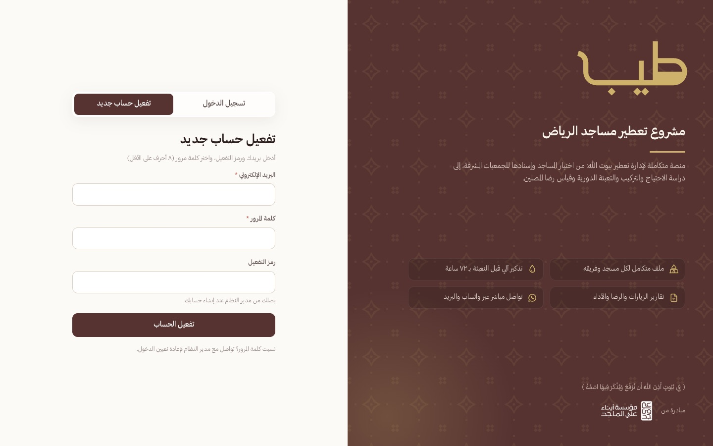
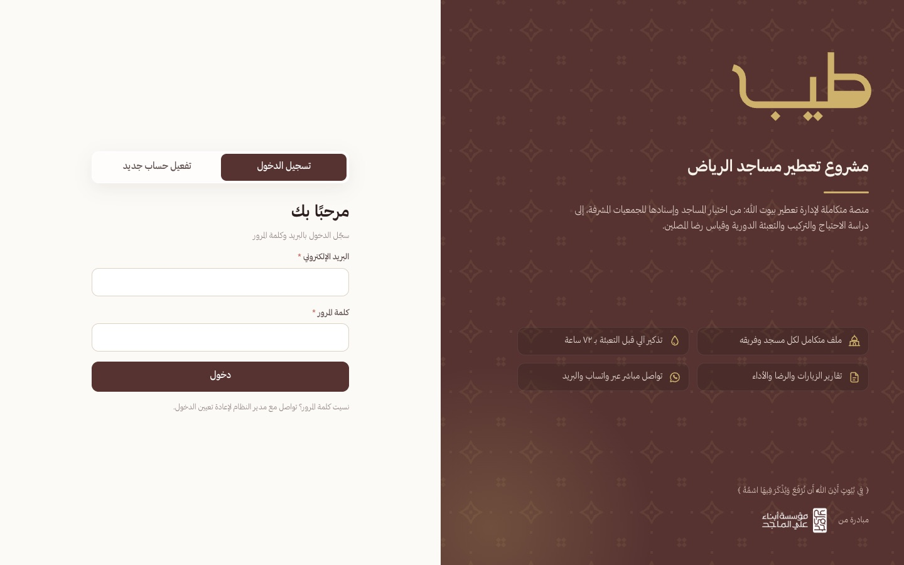
3التنقل في المنصة
القائمة الجانبية تعرض الصفحات المتاحة لصلاحيتك فقط. في الأعلى: زر البحث السريع للوصول لأي مسجد بالاسم أو الرمز أو الحي أو اسم الإمام وجواله، وزر الإشعارات وعليه عدد غير المقروء. وفي أسفل القائمة زر التبديل بين الوضع الفاتح والداكن وزر الخروج.
المنصة تعمل على الجوال بنفس الحساب: تظهر القائمة شريطًا سفليًا بأهم الصفحات، وزر «المزيد» يفتح بقية القائمة، والمساجد تظهر بطاقات سهلة اللمس.
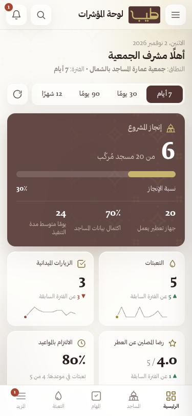
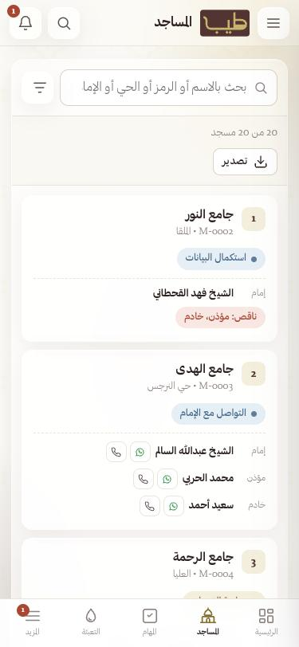
4لوحة المؤشرات
تعرض أرقام جمعيتكم: المساجد المركّبة، والتعبئات والزيارات، ورضا المصلين، والالتزام بالمواعيد، وما يحتاج انتباهك (زيارات متأخرة، مساجد بانتظار استكمال البيانات…)، مع مقارنات بالفترات السابقة.
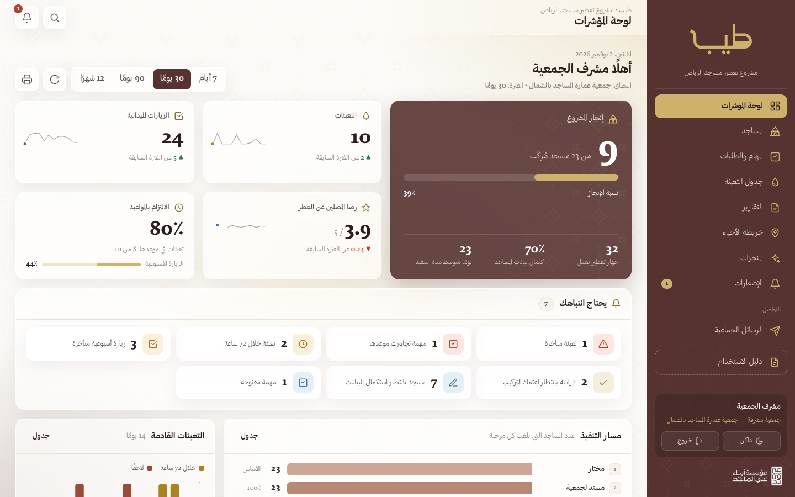
5مساجدي
قائمة مساجد الجمعية مرقّمة مع المرحلة والفريق. البيانات الناقصة تظهر بالأحمر (مثل: «ناقص: مؤذن، خادم»). اضغط أيقونة الواتساب أو الاتصال بجانب أي اسم للتواصل مباشرة.
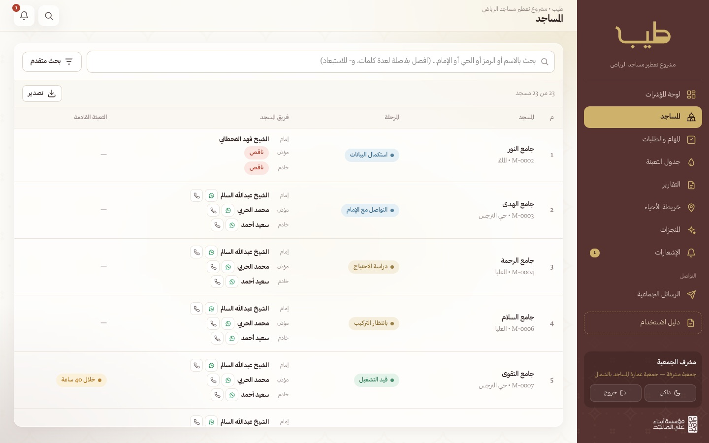
6الخطوة ٣: استكمال البيانات
- افتح المسجد الذي في مرحلة «استكمال البيانات».
- اضغط «استكمال البيانات» في بطاقة الإجراء التالي.
- أكمل الحي والجهة (شمال، جنوب، شرق، غرب، وسط)، واسم وجوال كل من الإمام والمؤذن والخادم، ويُفضل رابط الموقع من خرائط Google.
- احفظ ثم اضغط «اعتماد اكتمال البيانات» — ينتقل المسجد لمرحلة التواصل مع الإمام.
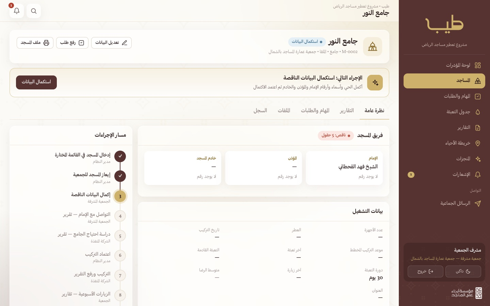
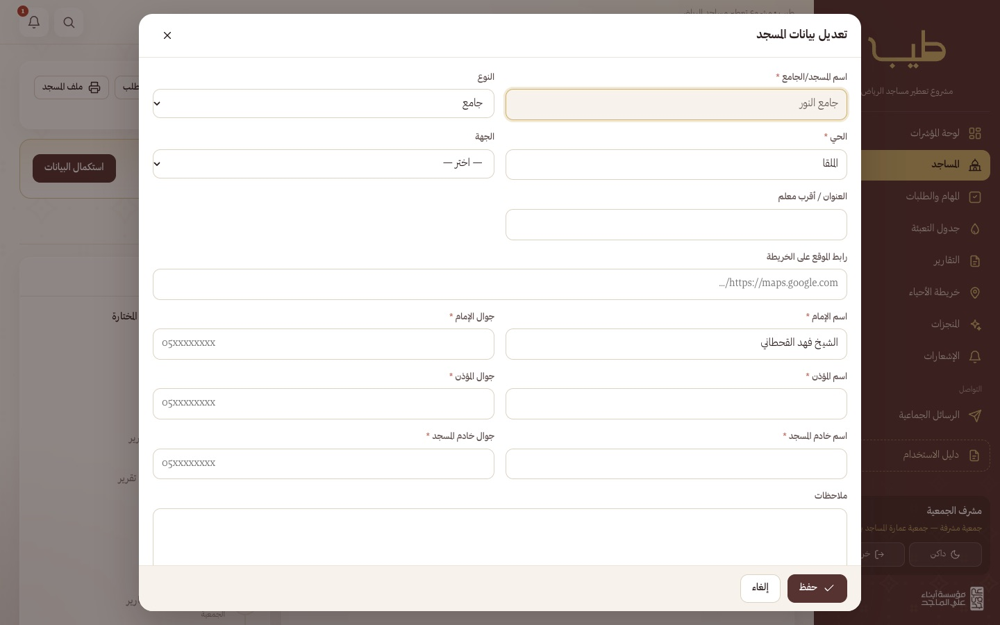
7الخطوة ٤: التواصل مع الإمام
- تواصل مع الإمام (اتصال أو زيارة أو واتساب) لعرض المشروع والتأكد من قابلية التطبيق.
- في صفحة المسجد اضغط «رفع التقرير».
- املأ: تاريخ التواصل، الطريقة، مع من تم التواصل، قابلية التطبيق، والوقت المناسب للزيارة والتركيب، وأي ملاحظات أو مرفقات.
- إذا كان قابلًا للتطبيق يصل الإشعار للشركة لدراسة الاحتياج.
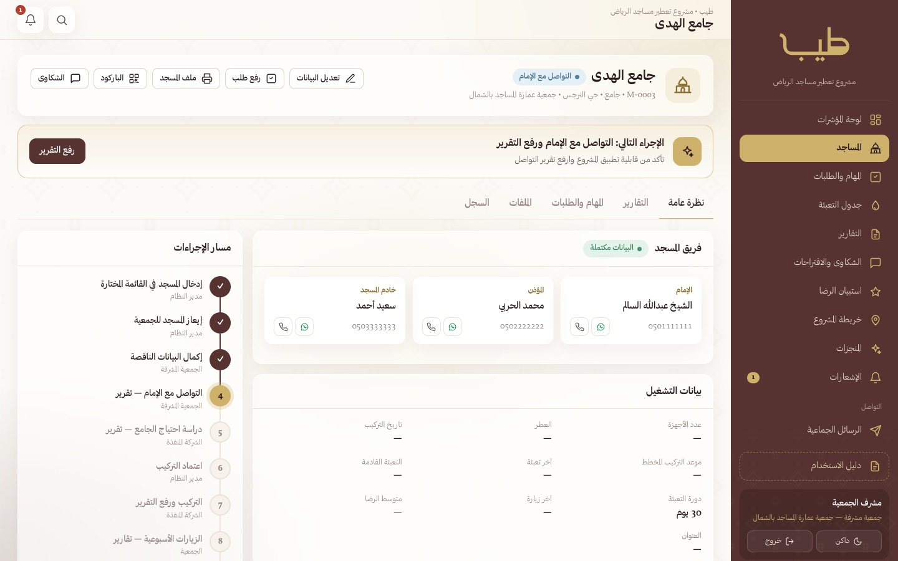
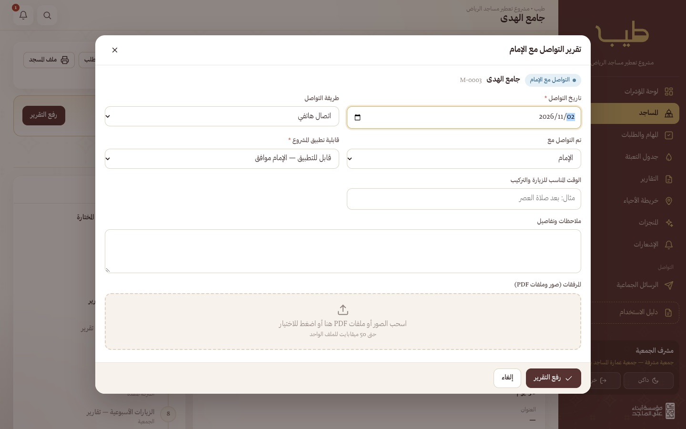
8بعد التركيب: المتابعة الدورية
عند تركيب الأجهزة يصبح المسجد «قيد التشغيل» وتظهر في صفحته أزرار المتابعة الدورية.
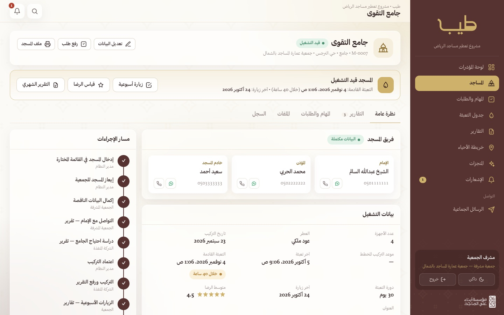
الخطوة ٨ — الزيارة الأسبوعية: حالة الأجهزة (سليمة أو توجد ملاحظة فنية)، وعدد الأجهزة العاملة، ومستوى الرائحة، ونظافة الأجهزة، مع صور. الملاحظة الفنية تصل للشركة والمدير فورًا.
الخطوة ٩ — قياس الرضا: الفئة المستطلعة وعددها، والرضا عن نوع العطر وقوة الرائحة، والرضا العام من ٥، مع الآراء والمقترحات.
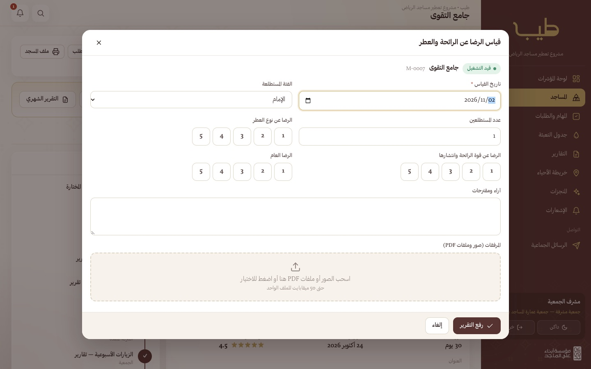
الخطوة ١٠ — التقرير الشهري: اختر الشهر فتُحسب الزيارات ومتوسط الرضا والتعبئات تلقائيًا، ثم قيّم أداء التعطير وأضف الملاحظات والتوصيات.
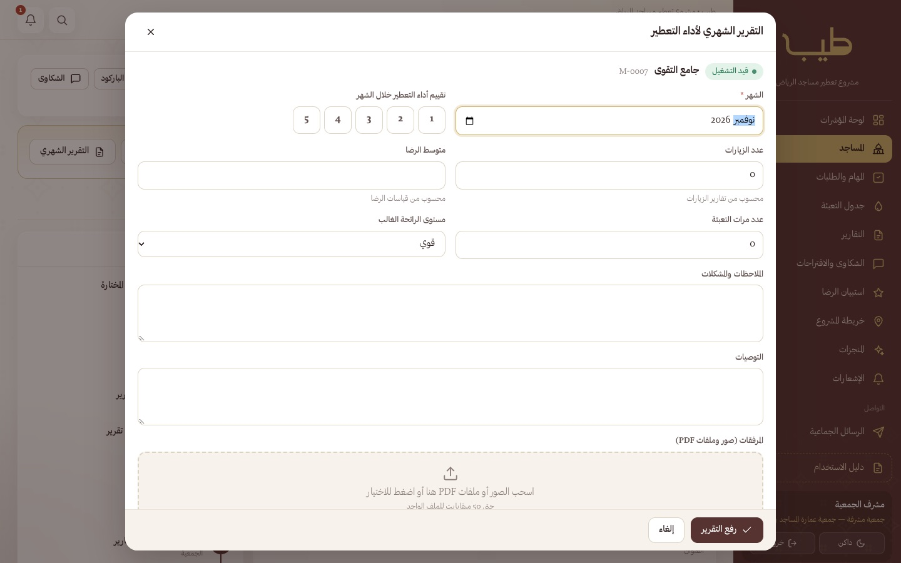
كل التقارير تظهر في تبويب «التقارير» بصفحة المسجد بالترتيب الزمني، ويمكن طباعة أي تقرير.
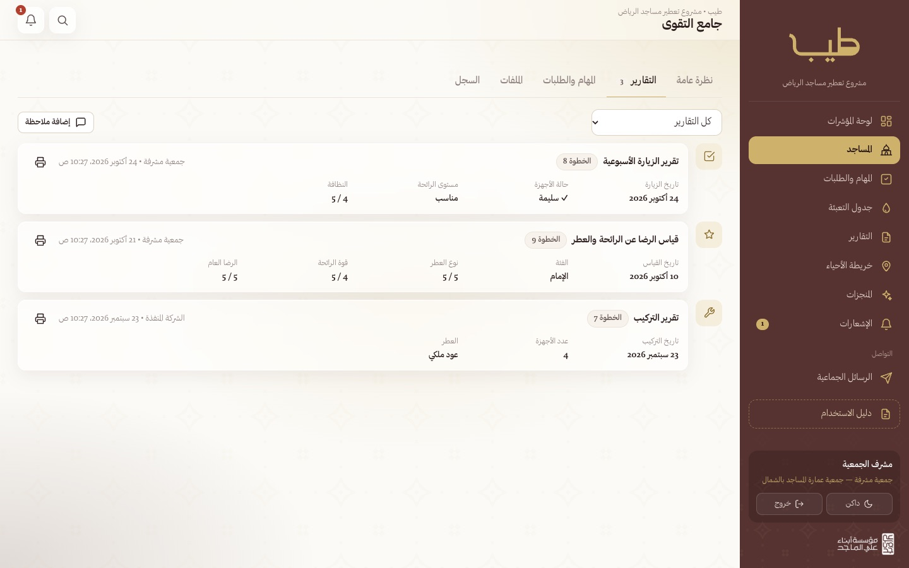
9جدول التعبئة والزيارات
يعرض مواعيد تعبئة مساجد الجمعية (المتأخرة والقريبة واللاحقة) والزيارات الأسبوعية المستحقة، لتنسيق زياراتكم مع مواعيد الشركة.
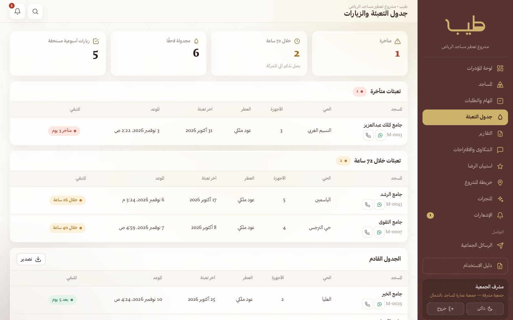
10المهام والطلبات
تظهر هنا المهام المسندة لجمعيتكم من المدير. افتح المهمة لقراءة تفاصيلها، وأضف تعليقًا أو مرفقًا، وغيّر حالتها عند الإنجاز. ويمكنكم رفع طلب للمدير (مثل طلب صيانة أو إضافة مسجد).

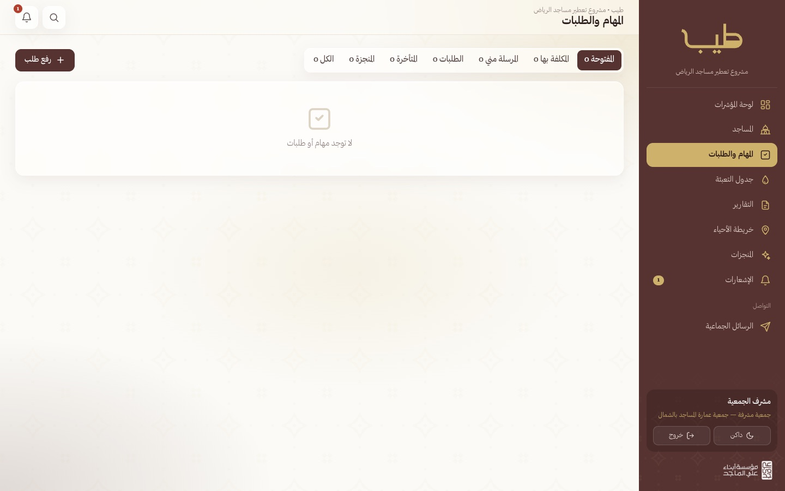
11الرسائل الجماعية
أرسل رسالة واتساب لأئمة أو مؤذني أو خدام مساجد الجمعية دفعة واحدة، مع تخصيص الرسالة بالمتغيرات {الاسم} و{المسجد} و{الحي}.
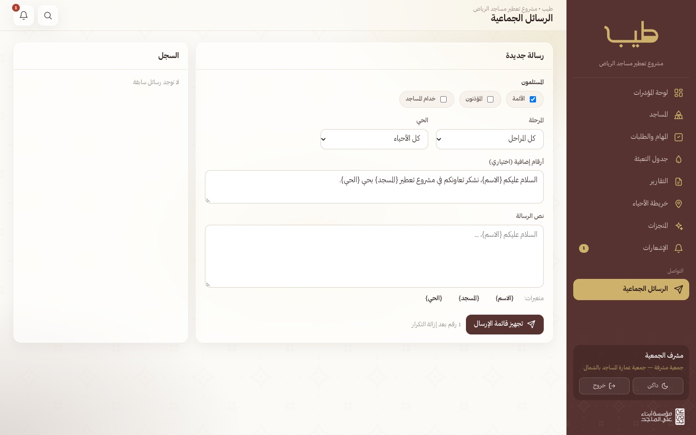
12الإشعارات
تصلك الإشعارات لحظيًا مع تنبيه صوتي خفيف عند كل ما يخصك: إسناد مسجد، تقرير جديد، اعتماد، مهمة، أو تذكير بموعد. اضغط الجرس لعرض آخر الإشعارات، واضغط أي إشعار للانتقال لصفحته مباشرة.
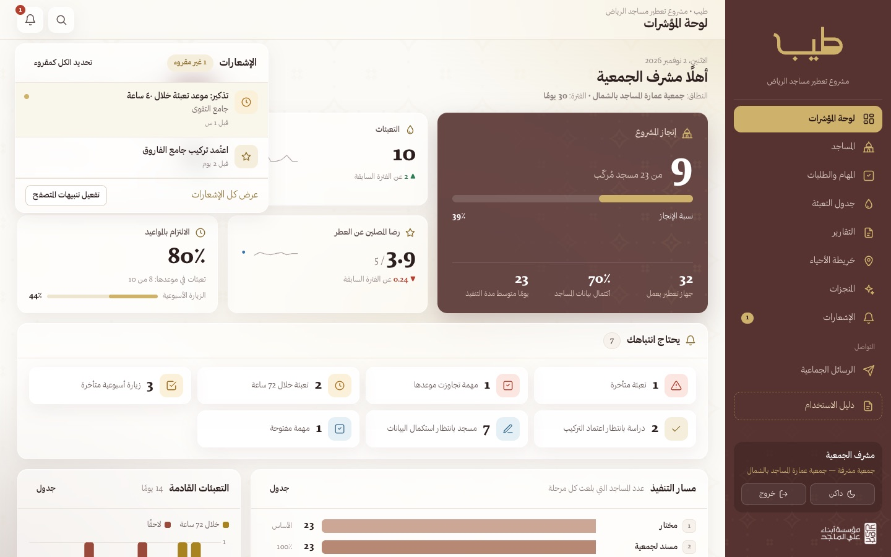